9.Évfolyam
A középiskola 1.évében a fő fókusz a műsuzaki világba való bevezetésre és a szakmai alapok megismerésére összpontosult.
Egy úgymond alapképzésben vettünk részt ebben az évben, megismertem a kézi fémmegmunkálás folyamatát, lépéseit.
Megtanultam többek között a tolómérő, a reszelő, a kézi fűrész, illetve e fúrógép használatát. Megismertem a menetfúrás és a
menetmetszés lépéseit, eljárását.
Továbbá elkezdődött a villamossági alapok bevezetése, különféle kapcsolások létrehozása.
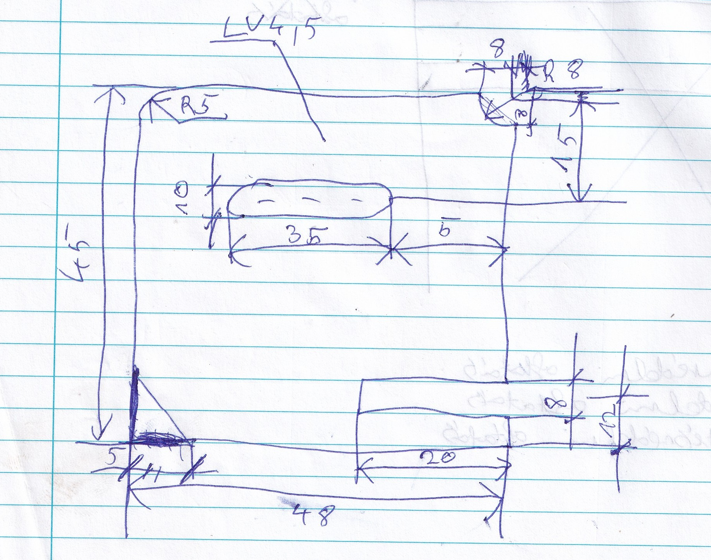
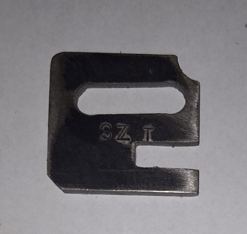
A képeken az első "művem" látható. Itt még szinte nulla műszaki rajz tudással igyekeztem valamilyen rajzot készíteni az 1.fémipari munkadarabom sikeres kivitelezéséhez.
Kisebb-nagyobb sikerrel, többszöri újrakezdéssel, de elkészült az első munkadarabom.
Továbbá villamossági téren is próbára tettem magam, régebbi érdeklődésem miatt, ezen a téren sikeresebben teljesítettem a feladatokat.
Már régebb óta érdekel a villamosság, akkor még főként elemmel működő áramköröket csináltam, barkácsoltam. Az elektronika területén főként ellenállásokkal, azzokkal való
kapcsolásokkal, illetve a kapcsolás dokumentálásával, mérési jegyzőkönyvek készítésével foglalkoztam.
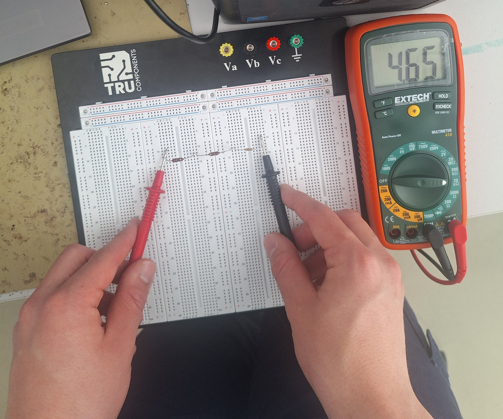
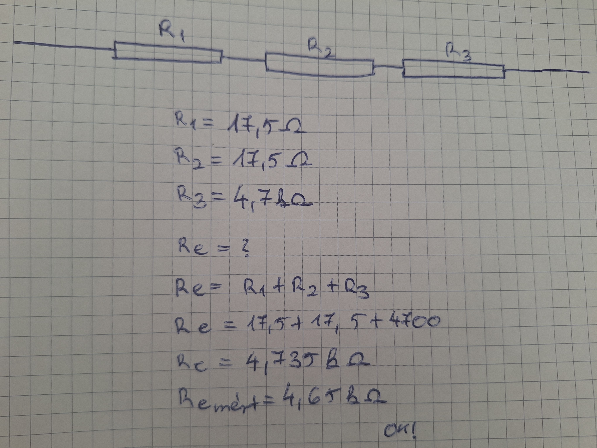
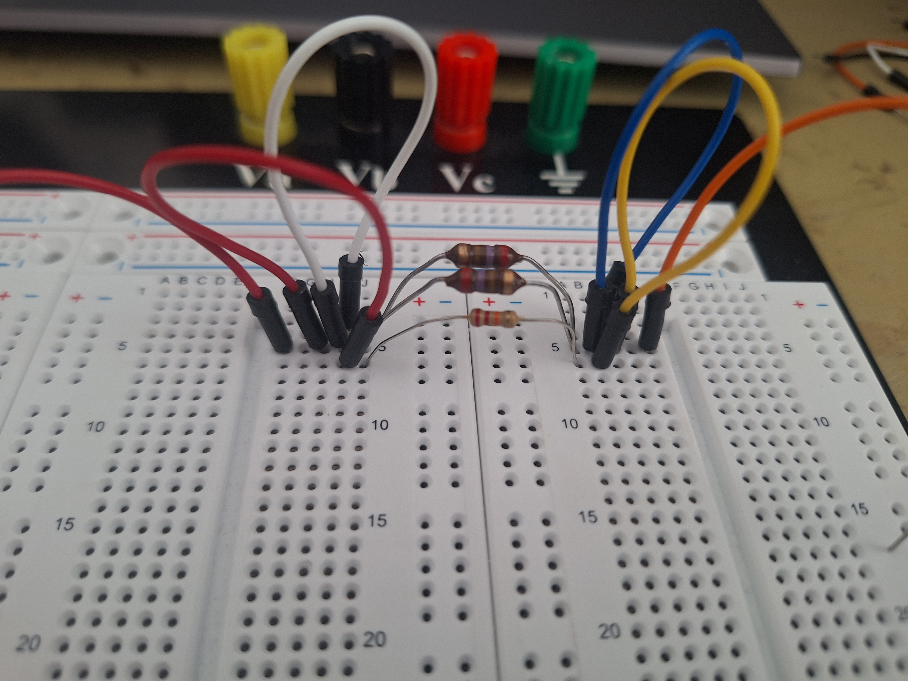
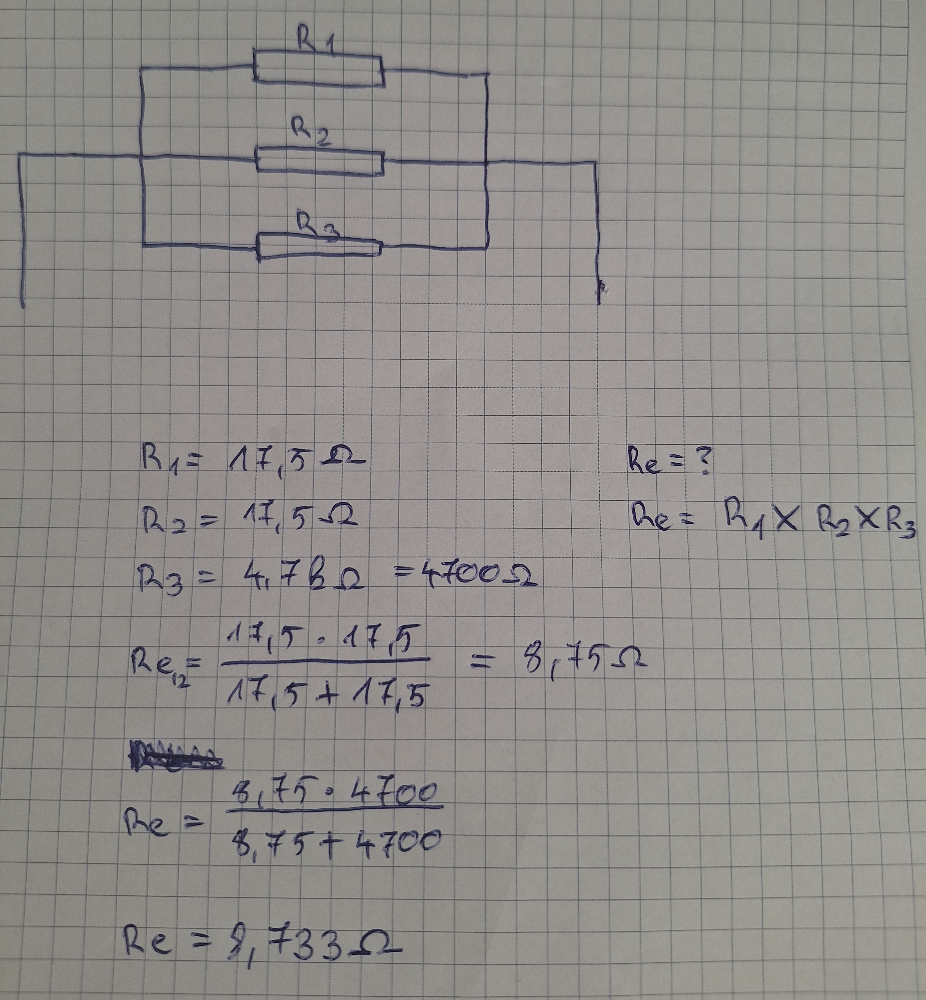
10.Évfolyam
A 2. középiskolai évemben további alapokat sajátítottam el a szakma területén. A tárgyak szinte ugyanazok, csak kicsit komolyabban. A következő képeken a kétáramkörös, avagy csillárkapcsolás és a kéttsarkú kapcsoló bekötése látható.
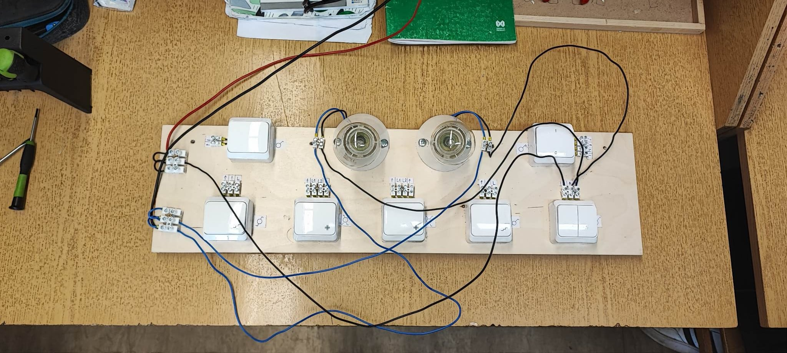
Az 1. képen látható kapcsolást például szobákban használják, ezzel több körre osztható a szoba világítása, vagy ahogy a nevéből is adódik, csillárok ágainak külön kapcsolására is szolgálhat. Ennek a kapcsolásnak a számjelölése: 105.
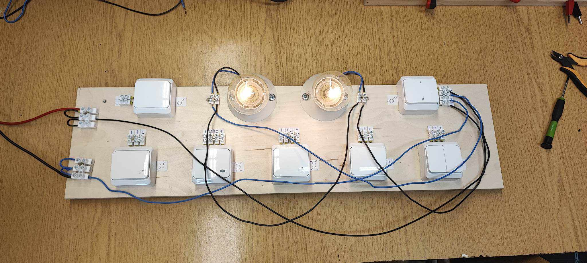
A 2. képen látható kapcsolás szinte bárhol megtalálható, de leginkább vizes helységeknél alkalmazzák, mint például egy fürdőszobában. Lényege, hogy nem csak a fázist, hanem a nullavezetőt is
megszakítja.
Képes vagyok mindneféle villamos kapcasolást létrehozni, biztosítani ezeket, vezetékelni, szerelvényezni... akár egy esetleges épületet, házat is.
A fémmegmunkálás terén, illetve a műszaki rajz területén nagyon sokat fejlődtem az előző tanévhez képest, a következő képen látható munkadarabot például az ágazati alapvizsgán készítettem el. Képes vagyok már bonyolultabb műszaki rajzokat is elkészíteni, fúrógéppel, illetve már gépi fűrésszel is tudok vágni.
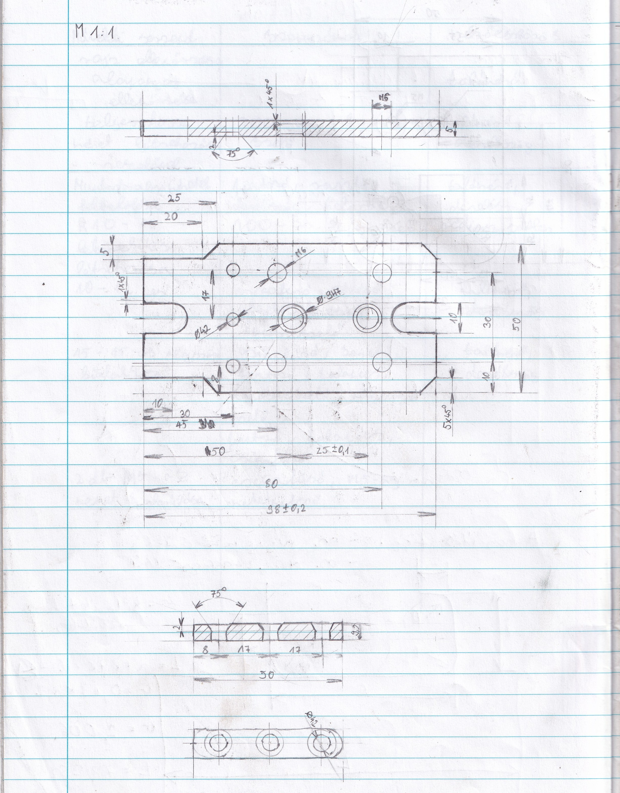
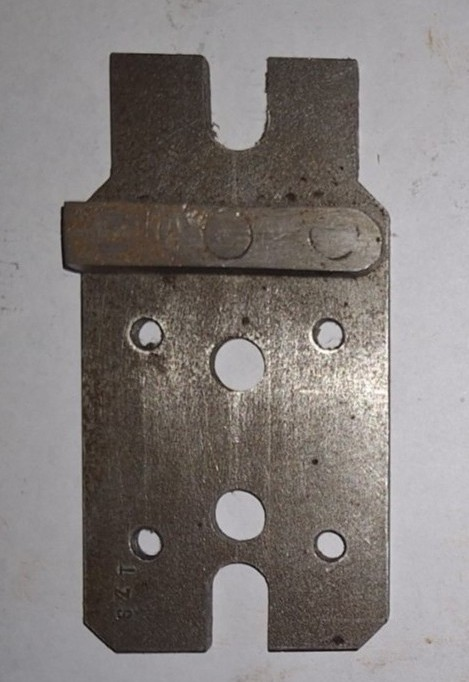
Drezda (Erasmus+):
10.évfolyamban a németországi tartózkodásom során egy 2 hetes tréningen volt lehetőségem részt venni a WBS Training AG -nál, ahol programozási ismereteket sajátíthattam el.
A tanfolyam során, a programozás világában sok új dologgal ismerkedtem meg: Az első projektem az android studioban egy „Hello World” app létrehozása volt. Ezen a projekten mutatta be az oktató, hogy hogyan kell a különböző kódokat megírni, hogy melyik kódot mire használjuk, illetve megtanultam, hogy hogyan kell egy alkalmazást elrendezni. Megtanultam a különféle mezők, választógombok(rádiogombok) és a gombok elhelyezését egy „oldalon”. Megtudtam a szöveg formázási lehetőségeit, mint például a betűméret, a betűszínek, a mezők színeinek és méreteinek beállításával. Ezen ismeretek megszerzése után, már önállóan, vagyis 3 fős csapatban folytattunk tevékenységünket. A feladat adott, egy saját egyszerűbb aplikáció létrehozása, majd annak bemutatása. Mi a csoportunkkal egy saját számológépet csináltunk, mely a 2. hét végére működőképes is lett. Ennek működését a csoport előtt mutattuk be. Továbbá megemlíteném, hogy fejlődtem még az idegennyelv használatával is.
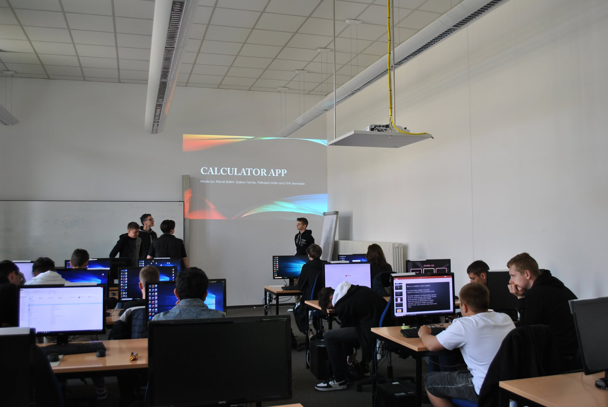
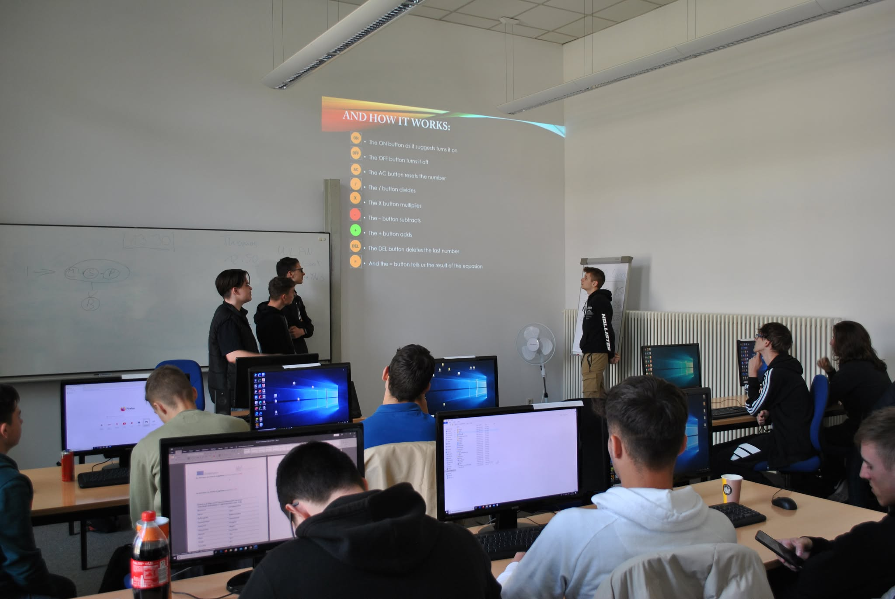
Steyr (Erasmus+):
11.évfolyamban újra lehetőségem nyílt részt venni az erasmus keretén belül egy 2 hetes szakmai gyakorlaton Ausztriában. A mobilitás alatti tevékenységem itt nem a programozásra, hanem a szakma másik ágazatára, az elektronikára összpontosult. Egy villamossági céghez kerültem, ők igazából nagyobb épületek villamossági szerelésével foglalkoznak. Nagyon szerettem ezt a helyet. A mobilitás 2. hetén rajtunk kívül álló probléma miatt más munkahelyre kerültem. A 2. héten a BMW autógyár raktárában folytattam tevékenységemet. Itt ismét csapatmunkában dolgoztam, illetve az előző évhez hasonlóan, itt is fejlődött a német nyelvtudásom.
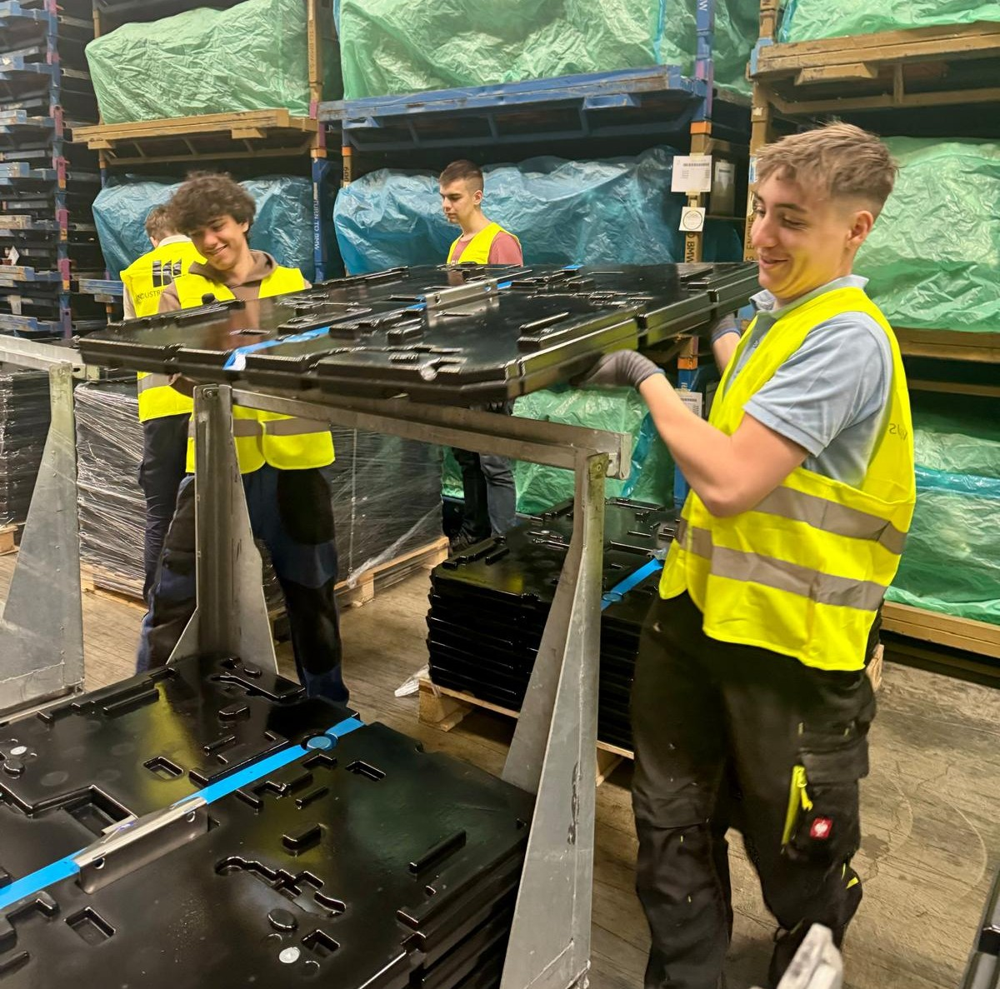
További évfolyamok
A sikeres ágazati vizsga után a 11. évfolyamban a szakmai tanulmányaimat a TDK Hungary Components Kft.-nél folytathattam. A továbbiakban nem külön
évekre bontva mutatom be a munkáimat, inkább egyben, témakörökre bontva mesélem, hogyan is fejlődtem a cégben. A hangsúly innentől leginkább a tapasztalat szerzésén alapult.
Megismerkedtem a pneumatika rejtelmeivel, már képes vagyok nehezebb rendszereket is összerakni.
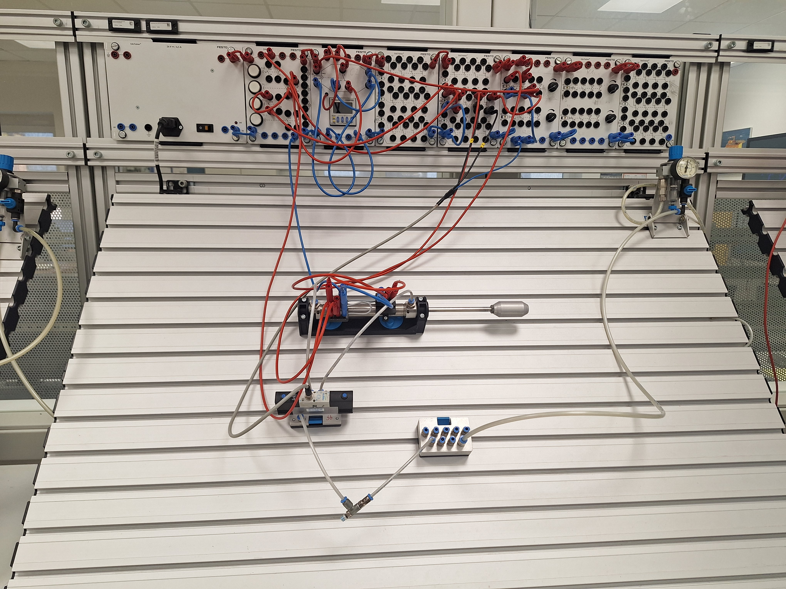
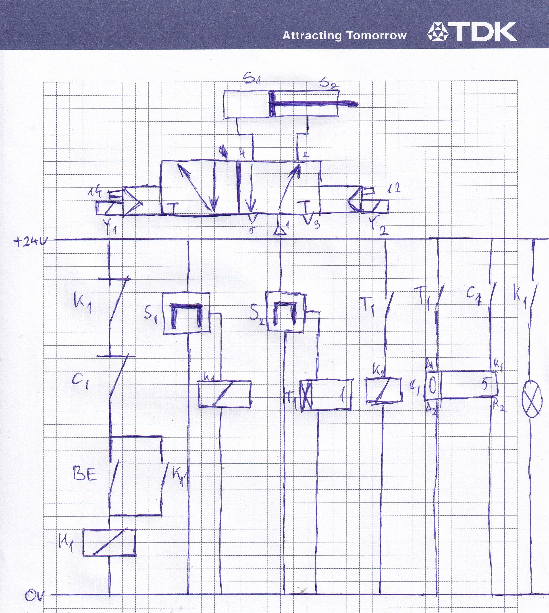
A képeken egy pneumatikus rendszer és annak vezérlési rajza látható.A vezérlés: 1 gombnyomásra behúz a relé, mely öntartja magát mindaddig, míg a munkahenger ötször el nem éri a végállását. Ezt egy számláló segítségével oldottam meg, mely visszacsatoló jelére a relé öntartása megszűnik.A gomb újboli megnyomására a folyamat előről kezdődik. A munkahenger finom lökését egy folytószelep alkalmazásával oldottam meg.
Pneumatikus ismereteimet lehetőségem nyílt megosztani egy nyíltnap keretén belül a pályaválasztás előtt állókkal. Szeretek egyébként tudást átadni másoknak és kérdéseik esetén rendelkezésükre állni.
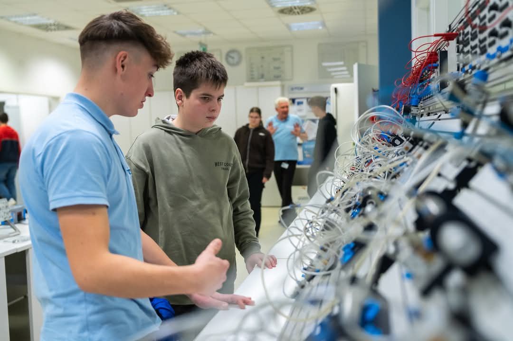
A képzés során villanyszereléssel és különböző kapcsolások létrehozásával is foglalkoztam. A tanműhelyben korszerű villanyszerelő tanulófal található aminek a segítségével valós körülmények közt dolgozhattam és gyakorolhattam.
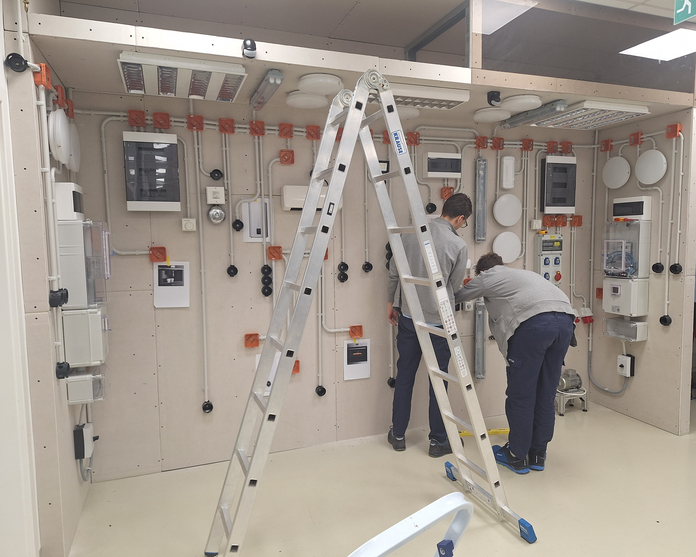
Ezt a tudásomat később boldogan alkalmaztam az otthoni pince elavult villamos hálózatának újraszarelésében. Újravezetékeltem az egész hálózatot, illetve új szerelvényeket is kaptak a helységek, továbbá felraktam egy külön lakáselosztó szekrényt, így a pince fogyasztóit, a fűtést és a világítást mind külön-külön kismegszakítókra osztottam.
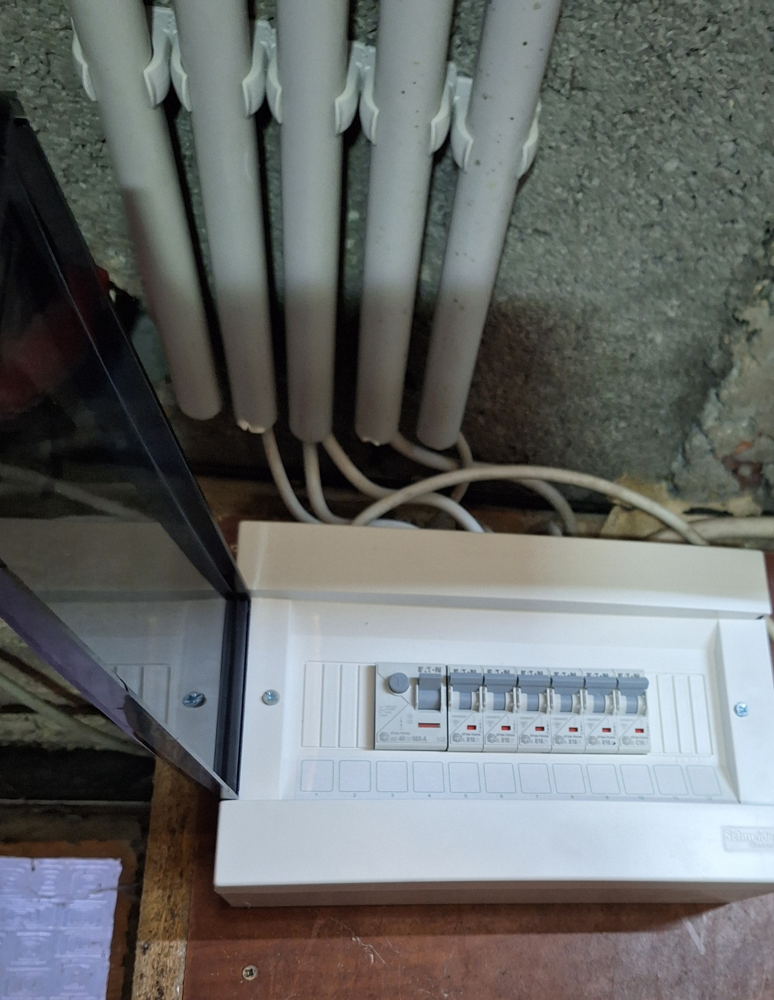
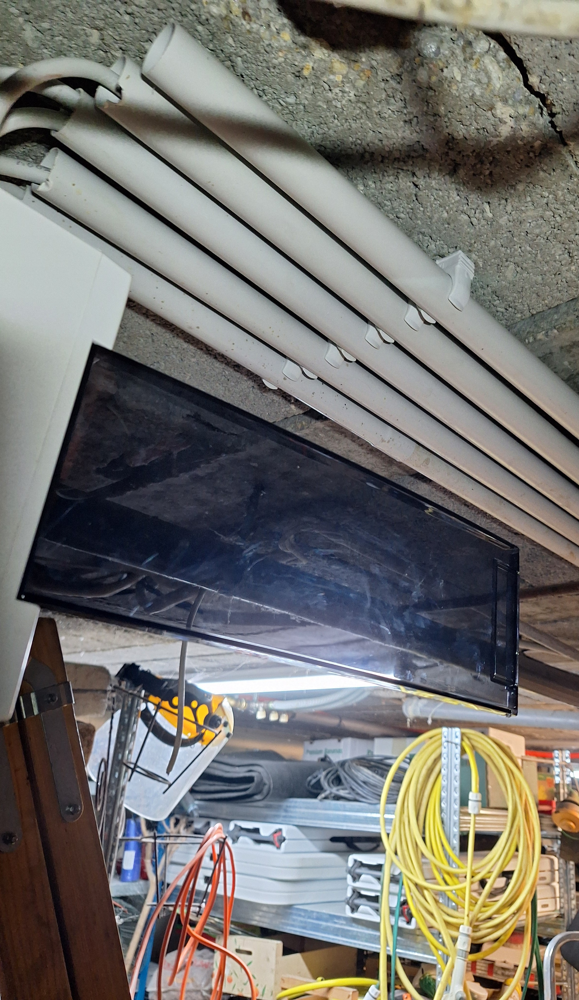
A következő képen egy személyes otthoni projektet mutatok be, hiszen büszke vagyok arra, hogy meg tudtam csinálni. A képen egy ipari matricanyomtató látható, a probléma, amiért hozzám került, hogy "nem kapcsol be". Rögtön tápellátás problémára gyanakodtam, a tápegység panelén felrobbant egy triac, a cseréjét nem tudtam megoldani, hiszen más alkatrész is károsult. A megoldásom pedig egy kis méricskélés után az lett, hogy választottam egy hasonló müködésű, megfelelő feszültségű tápegységet és azt szereltem bele.

Megismertem a C és a Python programozási nyelvet, ezek a tananyagok nem tartoztak a kedvenceim közé és úgy gondolom, hogy még fejlesztenem kell ezeket a tudásaimat , de erre lehetőségem lesz a középiskola elvégzése után a Széchenyi István Egyetemen, Győrben.
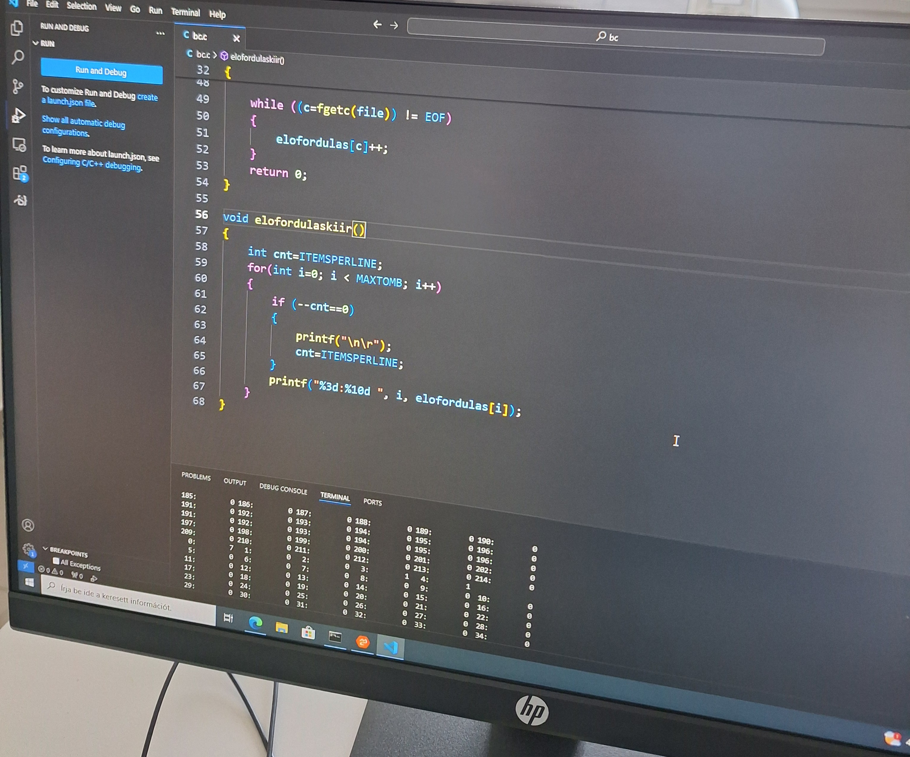
Foglalkoztam motorok vezérlésével, bekötésükkel. Többek között megismertem a Kemo M171 PWM teljesítményszabályzót, melyre egy egyenáramú villanymotort kötöttem, illetve használtam még egy potenciométert is, aminek segítségével szabályozni lehet a motor gyorsaságát.
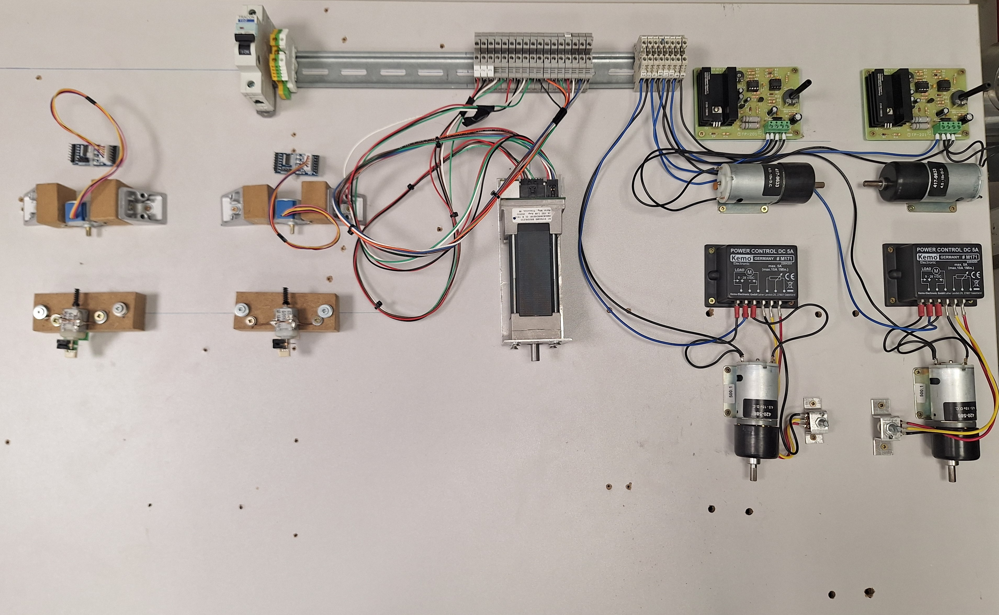
12.évfolyamban megtanultam a frekvenciaváltó működésének elvét, azt, hogy mire használják általában. Nagyon érdekes számomra. Csináltam egy motor vezérlést,
frekvenciaváltóval.
Kellékek: Relé, tápegység, kismegszakító, FI relé, frekvenciaváltó, sorkapcsok, 2 állású forgókapcsoló, 2 nyomógomb, 1 potméter, 1 egyfázisú villanymotor.
Működése: A zöld nyomógmb megnyomására a relé behúz, létrejön egy öntartás, a motor elindul. A piros nyomógomb megnyomására az öntartás megszűnik, a motor megáll.
A forgókapcsoló egyik állásával a motor jobbra, míg másik állásával balra fog forogni. A potenciométer segítségével pedig a motor sebességét állítjuk. Itt jön be mire is jó
a frekvenciaváltó, a motor sebességét a hálózati frekvencia állításával lehet szabályozni.
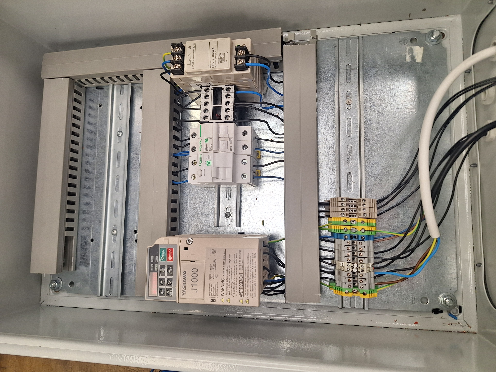
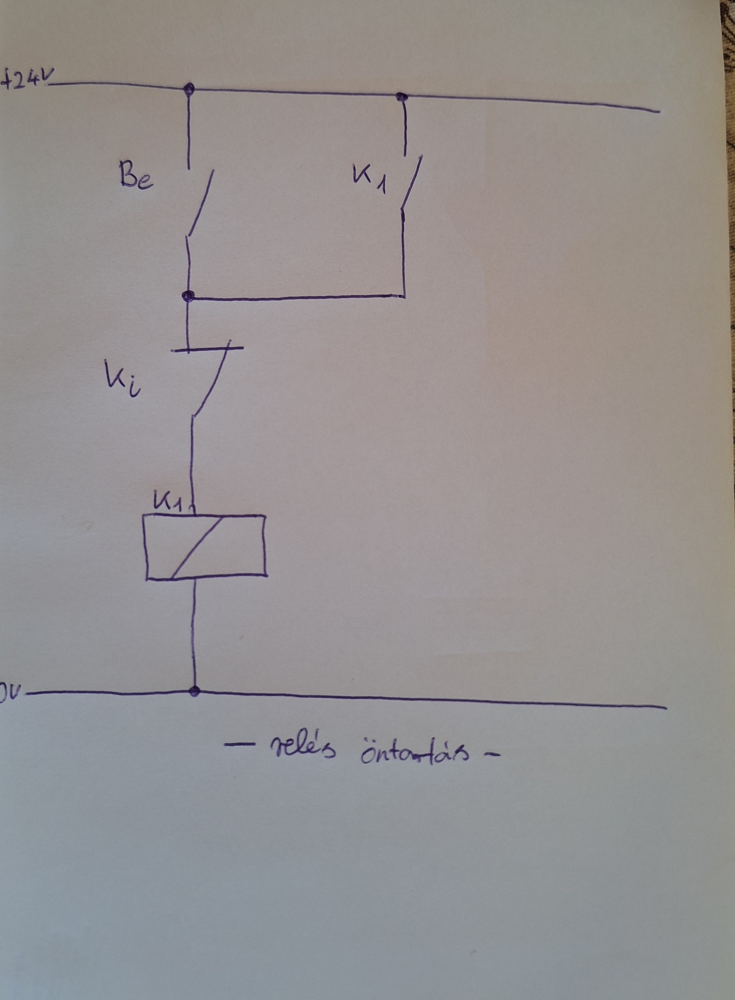
Foglalkoztam továbbá különféle szenzorokkal, azok működési elvével, bekötésükkel. Tanulmányoztam az érzékelők katalóguslapjait, leírásait. A szenzorok nagyon fontosak és elengedhetetlenek az ipari automatizálásban. Vegyünk például csak egy gyártósort egy gyárban, bármilyen gyárban. Rentgeteg szenzor kell egy ideális gyártáshoz, ezek segítségével készülhetnek statisztikák, mérések, stb.. Hozok egy képet is, a következő képen látható, hogy felszereltük egy bútorlapra a társaimmal többek között egy infra(sorompót) érzékelőt(vevő és fogadó rész), különféle optikai és induktív érzékelőket, illetve nyomásérzékelőt is.
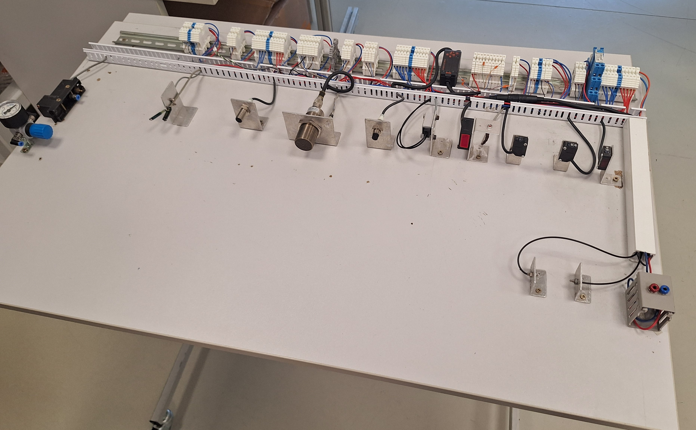
A következő téma amít meg szeretnék említeni mindenképpen, az a PLC (Programmable Logic Controller) programozás, a bemenetek és kimenetek bekötése...
Ha választanom kellene, talán ez a kedvencem. Megemlíteném itt a terepi buszokat, a soros kommunikácót. Ha már kommunikáció....többféle kommunikációval is megismerkedtem
tanulmányaim során, például az I2C, az SPI, amiket inkább rövid távolságon használunk. Ezeknél van egy közös órajel is, ami a kommunikáció ütemét adja, így ezek a szinkron
kommunikáció fajtájába tartoznak. Az aszinkron kommunikáció, ahol nincs közös órajel, például az UART. Itt a kommunikáció elejét egy START, míg a végét egy STOP bit jelzi.
Megkülönböztetünk továbbá szimplex(egyirányú), félduplex(vátakozó kétirányú) és duplex(egyidejű kétirányú) kommunikációt. Ha már PLC-ről beszélek, előjön az RS kommunikáció,
a HMI(Human-Machine Interface)-t RS kommunikáción keresztül kötjük öszze a PLC-vel.
Tanulmányaim során legfőképpen 2 gyártó PLC termékével dolgoztam, az egyik az OMRON, ennél a gyártmánynál a CX-programmerben programoztam nagyon soksféle dolgot.
Ha egyet választanom kellene, talán a lift vezérlése volt számomra a legérdekesebb és legizgalmasabb. A következő képeken ez a programom egy részlete látható.
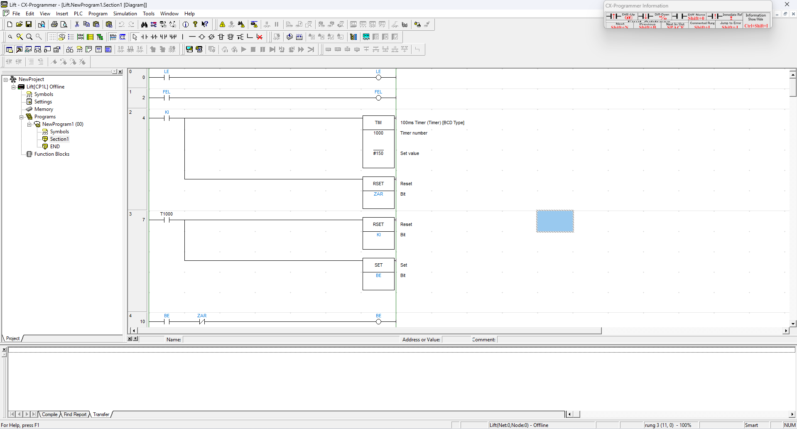
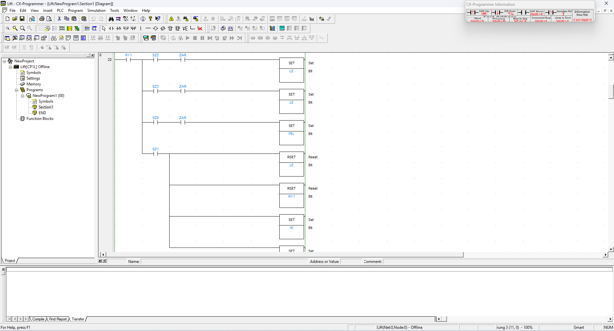
A másik gyártmány pedig a Siemens, ennél a gyártónál a LOGOSoft! programban dolgoztam. A következő képen a parkolóház vezérlése projektem látható. Lekezeltem a be- és kileéptető sorompót, illetve hozzá visszajelző lámpákat, ami a parkolóház telítettségéről ad visszajelzést. Amennyiben a parkolók megtelltek, a beléptető sorompó nem enged be több autót.
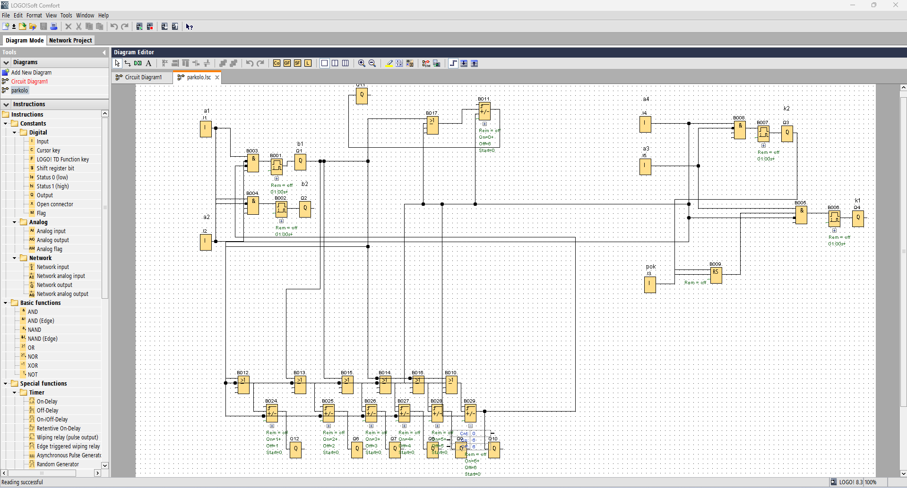